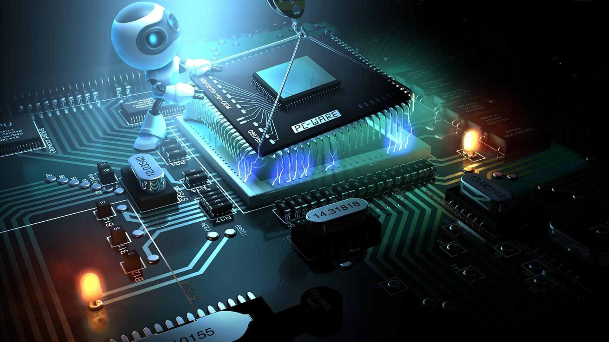
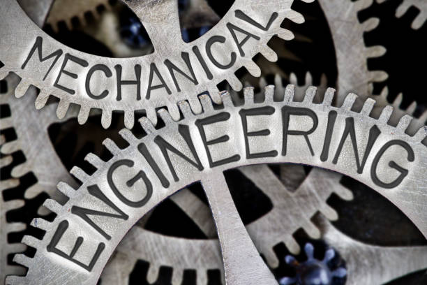
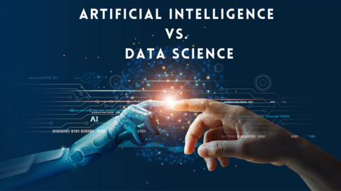
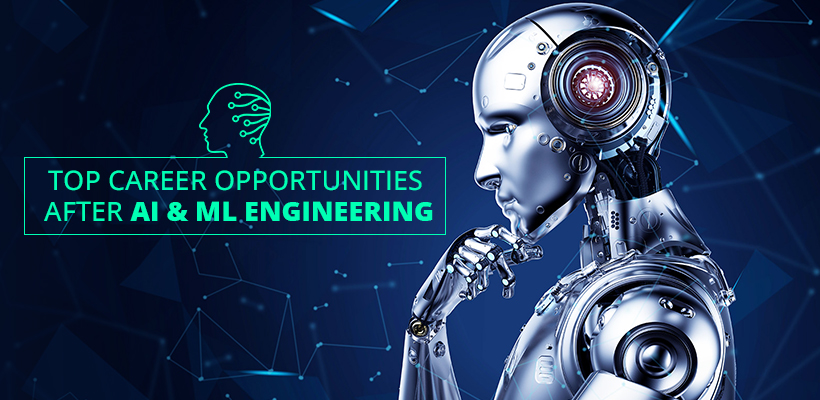
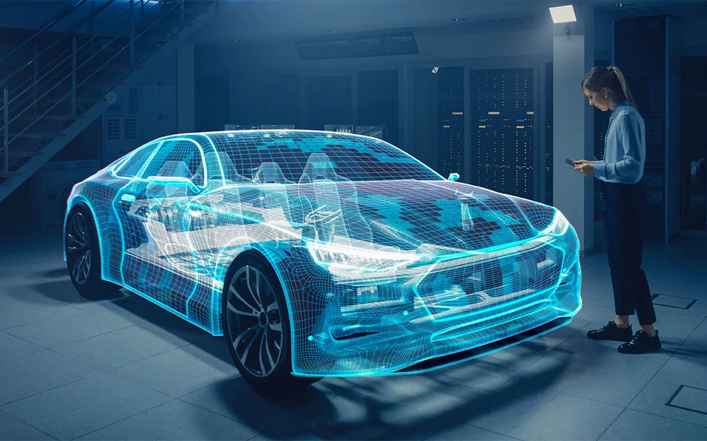
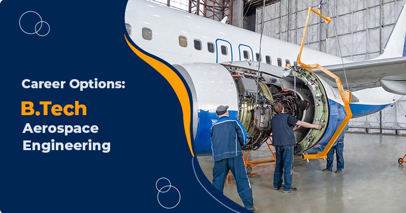

Courses we provide !!!
BE CSE
The BE Computer Science and Engineering program offers a solid foundation in computational theory, algorithms, and programming. Students learn software and hardware integration, artificial intelligence, machine learning, cybersecurity, and data science. The curriculum emphasizes problem-solving, design, and innovation, preparing graduates for roles in software development, systems engineering, and IT consultancy.
BTech IT

The BTech Information Technology program focuses on the design, development, and management of information systems. Students explore topics such as network architecture, database systems, web technologies, and cybersecurity. The program also emphasizes business and IT integration, preparing students for roles in software development, system administration, and IT project management.
BE ECE
The BE Electronics and Communication Engineering program provides a blend of core electronics and cutting-edge communication technologies. Students explore circuits, embedded systems, signal processing, wireless communication, and VLSI design. This program prepares graduates for careers in telecommunications, robotics, and embedded systems design.
BE EEE

The BE Electrical and Electronics Engineering program equips students with a strong foundation in electrical systems, power generation, and electronics. Courses cover subjects such as electrical machines, power electronics, renewable energy, and automation. Graduates are prepared for roles in power systems engineering, control systems, and electrical infrastructure design.
BE MECH
The BE Mechanical Engineering program covers the principles of mechanics, thermodynamics, and material science. Students learn to design and manufacture machines, engines, and systems that improve efficiency and functionality. The program prepares students for careers in automotive, aerospace, manufacturing, and energy industries.
BTech AIDS
The BTech in Artificial Intelligence and Data Science program integrates advanced AI algorithms with data science methodologies. Students learn machine learning, deep learning, big data analytics, and data visualization techniques. The curriculum emphasizes real-world applications of AI and data science in industries such as healthcare, finance, and technology.
BTech AIML
The BTech in Artificial Intelligence and Machine Learning program focuses on building intelligent systems using AI and ML technologies. Students explore deep learning, neural networks, natural language processing, and robotics. This program prepares graduates for cutting-edge careers in AI research, autonomous systems, and intelligent application development.
BTech AUTOMOBILE
The BTech in Automobile Engineering program provides knowledge of automotive design, manufacturing, and performance optimization. Students learn about vehicle dynamics, alternative energy vehicles, automotive electronics, and safety systems. Graduates can pursue roles in automotive design, manufacturing, R&D, and vehicle testing.
BTech AEROSPACE
The BTech Aerospace Engineering program covers the study of aircraft and spacecraft design, propulsion systems, and aerodynamics. Students explore flight mechanics, avionics, and space technology. The program prepares students for careers in aviation, space exploration, defense industries, and aeronautical research.